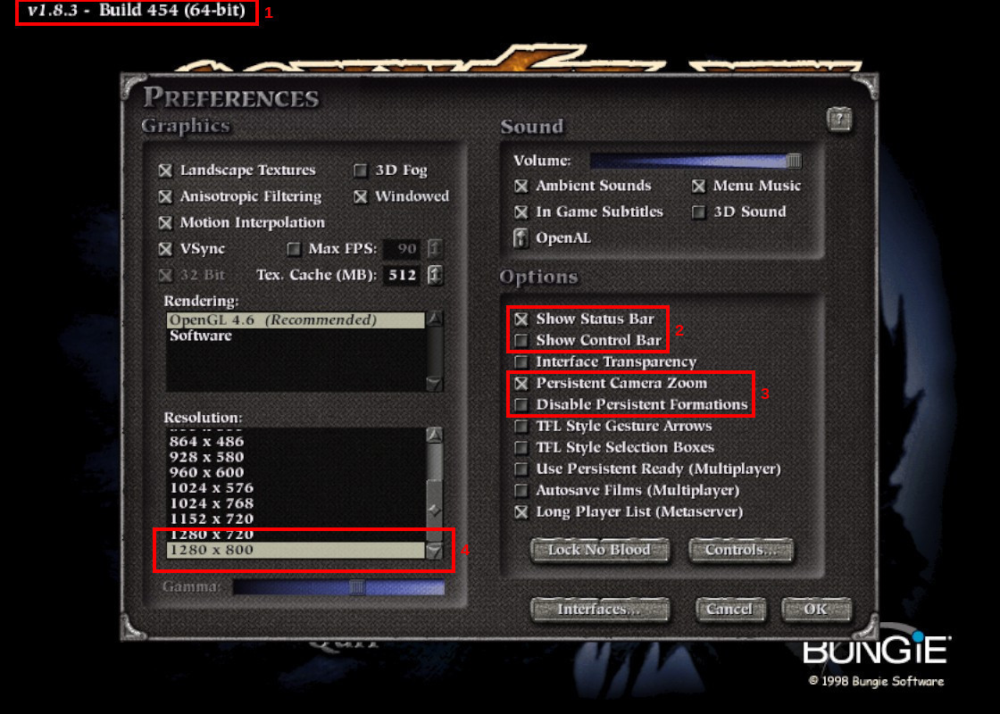

Preferences¶
Let’s start up Myth 2 and make sure the preferences are set up OK. As mentioned at the bottom of the Installation page, once you have selected the MythDeck configuration you can use its controls to mouse around the Myth 2 menus and change things as necessary:
to move the cursor.
or click
So, open the Preferences menu. The image below shows some things to observe or change there:
In the box marked 1 you can see the current version of the Project Magma patch that you’re running. As mentioned before, you need to be using 1.8.3 or later.
In the box marked 2 I’ve disabled the “control bar”, which is a piece of UI at the bottom of the screen that can be used to mouse-select unit presets and formations. Using dedicated buttons on the Deck is faster and saves precious screen real estate.
In the box marked 3, note that I’ve enabled persistent camera zoom. I always just want to leave the camera at max zoom anyway, so this way I don’t have to fix it at the start of every mission. I also left persistent formations enabled; I tend to keep the same formation for a given group of units, and not having to re-select it all the time is very nice. Both of these “persistences” have some limitations – some in-game cutscenes will reset zoom to default, and you lose any current persisted formations when you reload a savegame – but they’re still a big help.
And finally, as noted in 4, you can set the resolution. Running at lower resolutions has the advantage of making enemy “dots” more visible on the overhead map, but at the expense of image quality. Try different resolutions to see what you like, but the native Deck screen resolution maxes out at 1280x800.
Next, click on the “Controls” button…